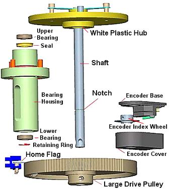

Replacing Bearings on Sample Storage Wheel
This procedure describes how to replace the bearings on the sample storage wheel.
Required Materials:
- Two bearings
Note: Install only sealed bearings (sealed bearings have a dark orangish-brown seal that completely covers the race). Refer to the service manual parts list for part numbers.
Replace the bearings in the sample storage wheel when:
- the sample storage wheel does not rotate properly.
- moisture has corroded the position index encoder on the sample storage wheel.
- the module has been disassembled for service and the bearings are not the sealed type.

-
Disassemble the sample storage module.
-
With the module upright, loosen the two set-screws on the drive motor positioning block.

-
Invert the module, remove the three screws that attach the mounting plate to the legs, and then remove the main plate.

-
Loosen the two set-screws that hold the pulley to the center shaft, and then remove the pulley from the shaft.

-
Remove the two screws that attach the encoder module to the base, and then move the module to the side.
Note: Do not damage the encoder wheel.

-
Loosen the small set-screw on the index wheel, and then lift the wheel off the shaft.
Caution: To avoid damaging the index wheel:
- Use sandpaper to remove any burrs on the shaft, so that the wheel slides off easily.
- Push upward on the bottom of the wheel and do not pull directly on the wheel.

-
Remove the two screws that attach the encoder base to the shaft housing, and then lift the base off the shaft.

-
Remove the four screws that attach the air duct to the module, and then remove the duct.

-
With the module upright, loosen the two set-screws on the drive motor positioning block.
-
Assemble the sample storage module.
-
Install the encoder index wheel onto the drive shaft and tighten the small set-screw.
Note:
- Do not push on the rim of the wheel. Push downward on the top of the wheel hub.
- Set the height of the wheel so that it will be centered within the encoder.
- Refer to the Electronics: Replacing Encoders procedure.

-
Install the encoder index wheel onto the drive shaft and tighten the small set-screw.